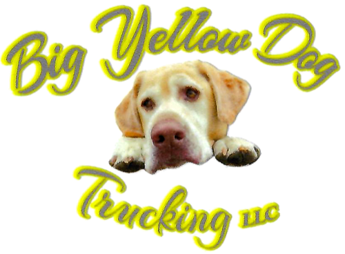
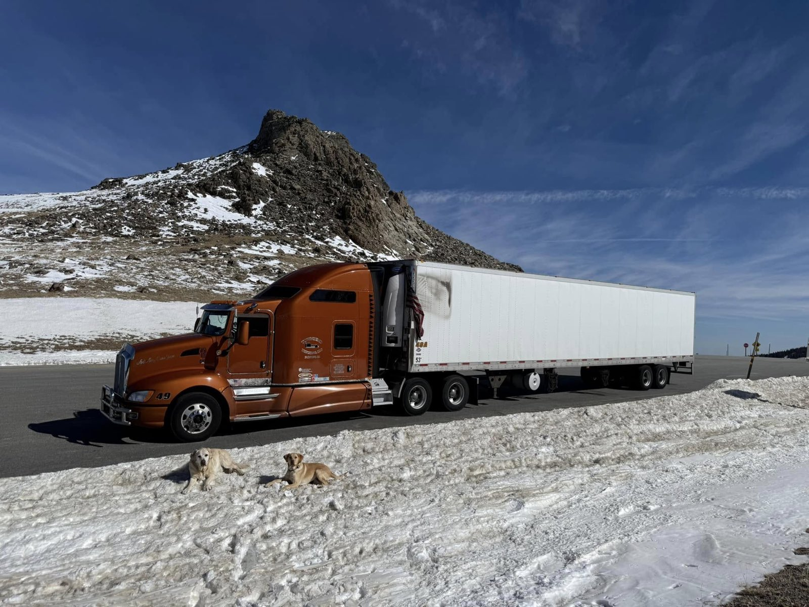
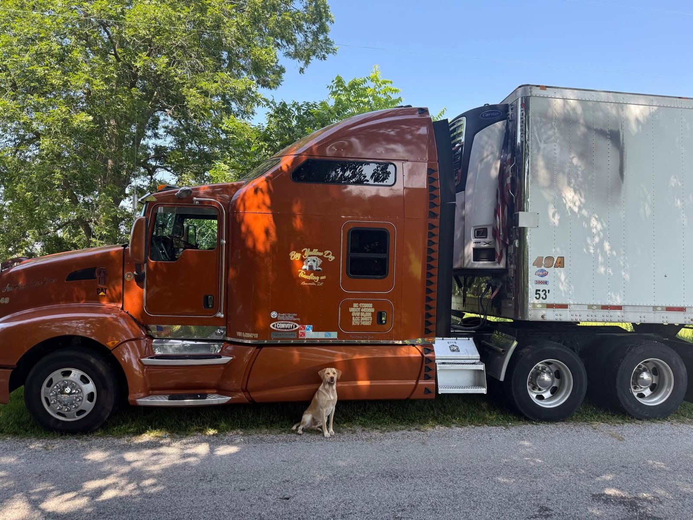
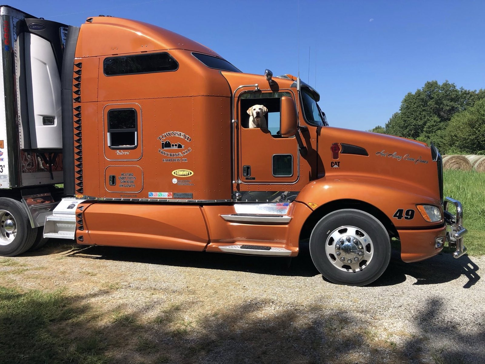
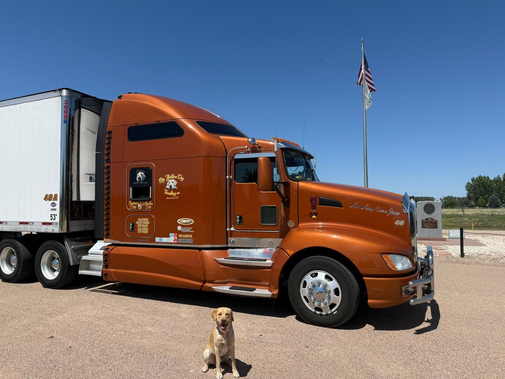

Owner-operated
You deal directly with the owner-operator — the same person behind the wheel and behind the work.

Big Yellow Dog Truckin’Freight & HaulingBig Yellow Dog Trucking
Big Yellow Dog Trucking is the trucking side of the YellowDog.lol family, with the same recognizable branding and the same straightforward approach.
Recognizable on the road
From the custom orange Kenworth to the yellow dog riding shotgun, Big Yellow Dog Truckin stands out on the road — and backs the look up with clean, on-time freight hauling.
The same branding, the same work ethic, and a yellow lab who is still convinced he should be involved in every department.

Meet the driver
The driver behind Big Yellow Dog Truckin brings over 2 million miles of over-the-road experience to every load — a lot of road, a lot of weather, and a lot of freight delivered on schedule.
Big Yellow Dog runs its own truck and trailer, hauls dry or refrigerated freight, and is willing to work with anyone. Straightforward, dependable, and easy to deal with — the same standard as the Diggin' side of the brand.
With a temperature-controlled reefer trailer, Big Yellow Dog can also move specialty and temperature-sensitive loads — produce and perishables, frozen goods, beverages, floral and nursery stock, and other freight that has to ride at a controlled temperature or stay protected from the weather. Have an unusual or specialty load? Reach out — chances are we can haul it.
Archie has personally logged an undisclosed number of those miles from the passenger seat, mostly overseeing the snack schedule.
On the road




You deal directly with the owner-operator — the same person behind the wheel and behind the work.
Big Yellow Dog Truckin holds to the same standard as Lil Yellow Dog Diggin: do good work and keep your word.
Big Yellow Dog Truckin keeps things simple: clear communication, dependable equipment, and a driver people can count on.
Two businesses, one brand family